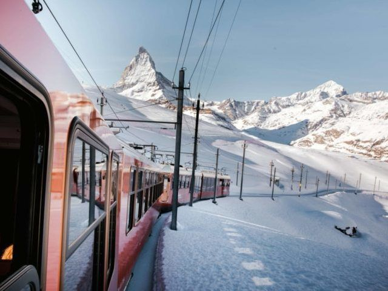

Skiferie
Høj intensitets ferie
Det at stå på ski er som regelt en høj intensitets aktivitet, men dette kan balanceres med et godt hotelophold og en aflappende rejse frem og tilbage. Nedenfor kan du se de skirejser vi tilbyder. Alle rejser er med nattog og 3 eller 4 stjernet hotelophold så du kan være klar dagen efter.
Åre i Sverige
Tag med GrønRejs på klimavenlig skiferie til Åre i Sverige og udforsk nordens bedste alpine skiområde. Området er opdelt i en højzone og en lavzone. I lavzonen foregår skiløbet under trægrænsen, og her finder man flere røde og sorte løjper, også kendt fra alpint VM. Højzonen kommer man til via gondolen, og herfra kan man stå på ski ned mod byen. Oplev den fantastiske stemning i Åre by, hvor shopping, restauranter, caféer og barer, skaber god energi, når man er færdig på pisterne.
9 dage fra kr. 5.250,-
Skitog til Østrig
Tag med os på en fantastisk skiferie til alperne i Østrig, hvor I kommer sovende frem til jeres destination, og klar til at stå på ski allerede tidligt den efterfølgende dag. Vores pakkerejser tager udgangspunkt i destinationerne Zell am See og St. Johann, men vi har også mulighed for at imødekomme ønsker, om andre østrigske skisportområder. Når I køber skiferien som en pakkerejse gennem os, er I sikret af rejsegarantofonden og pakkerejseloven. Der er desuden direkte nattog til Østrig fra Danmark.
8 dage fra kr. 6.950,-